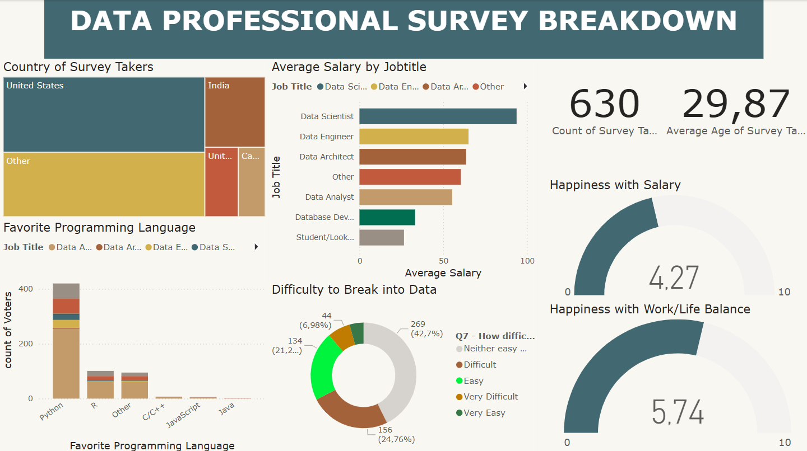

The programming and data sector is constantly evolving, with salaries, job satisfaction, and diversity playing crucial roles in industry dynamics.
Project Information
- Description: This project leverages Power BI to analyze survey data from professionals in the field, providing actionable insights for job seekers, employers, and policymakers.
- Category: PowerBI Project
Key Data Analysis & Visualization Processes:
- Salary Trends & Disparities: Analyzed salary distributions across experience levels, job roles, and geographic locations.
- Job Satisfaction Insights: Explored how factors like salary, work-life balance, and career growth impact job satisfaction.
- Diversity Representation: Examined gender and demographic diversity in the tech workforce to highlight inclusivity trends.
- Industry Trends Over Time: Identified shifts in job demand, preferred skills, and remote work adoption.
Business Impact:
A structured analysis of workforce trends empowers professionals, companies, and analysts to:
- Make Data-Driven Career Decisions – Understand salary benchmarks and job satisfaction factors to guide career growth.
- Enhance Hiring & Retention Strategies – Help HR teams attract and retain talent with competitive salaries and improved workplace policies.
- Promote Diversity & Inclusion – Support equitable hiring practices and measure diversity progress within organizations.
- Identify Industry Skill Gaps – Recognize emerging technologies and skill demands to stay competitive.
